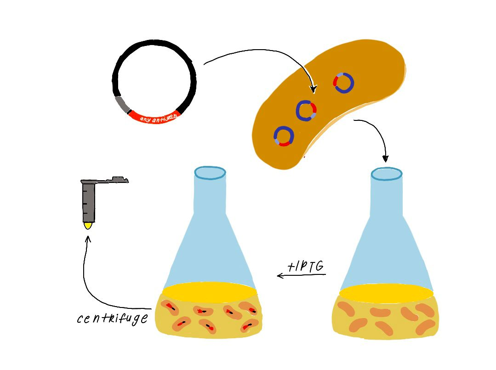
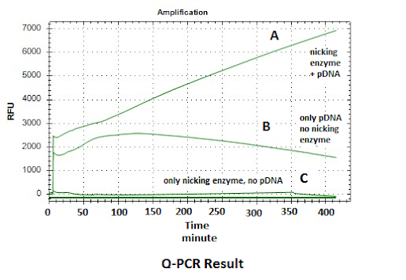

Insert gene sequence of a nicking enzyme is amplified from the host DNA genome by using Polymerase Chain Reaction (PCR). Then, insert is fused into green fluorescent protein encoding carrier vector plasmid DNA by ligation independent cloning method. The generated recombinant DNA is transformed into the competent BL21 Escherichia coli bacterial cells. Finally, transformant bacterial colonies are screened and selected on Luria Bertani Agar Medium (LBA) including kanamycine antibiotic by using colony PCR.
Recombinant bacterial colony is inoculated in Luria Bertani broth (LB) including Kanamycin and incubated with 180 rpm at 37 C for overnight. 1/100 dilution of the overnight culture is inoculated in fresh LB medium and incubated with 180 rpm at 37 C until optic density at 600 nanometer of culture is reached 0.6. The culture is induced with optimal iptg concentration then incubated with 180 rpm at 37 C for 5 hours.
The culture is centrifuged for precipitation of the bacterial cells and supernatant is removed. The cell pellet is lyzed with chemical solutions. The lysate is loaded into nickel affinity column chromatography for binding of the 6x Histidine tagged nicking enzyme by affinity interaction. Unwanted molecules are washed from the column. Then the desired protein is eluted many times from the column and collected. Protein fractions are analyzed by using the sodium dodecyl sulfate polyacrylamide gel electrophoresis (SDS PAGE).
The refolded proteins were analyzed by using SDS PAGE for protein verifying. Verified samples are used for DNA amplification with Klenow Fragment in real time PCR (Q-PCR) reaction mixture. DNA amplification is followed by increasing the sybr green dye signal with a Q-PCR instrument for verifying.
Figure: Q-PCR Result- DNA amplification datas is shown depending on sybr green dye binding to DNA. DNA amplification is observed linearly based on time at line A that shows reaction mixture including both of nicking enzyme and template DNA. The signal of the B line is lesser than the A line due to lack of nicking enzyme in mixture. There is no signal for the C line due to lack of DNA. These results show that signal amplification is successful by using nicking enzyme at room temperature.